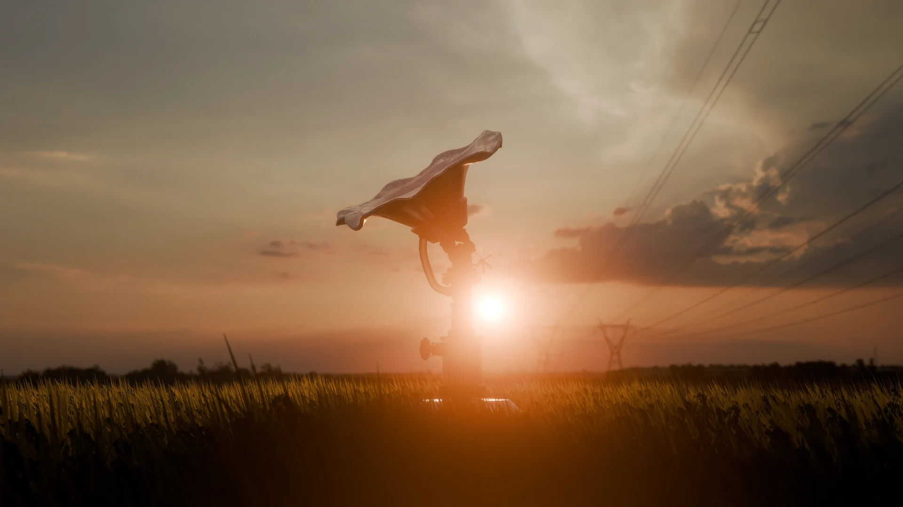
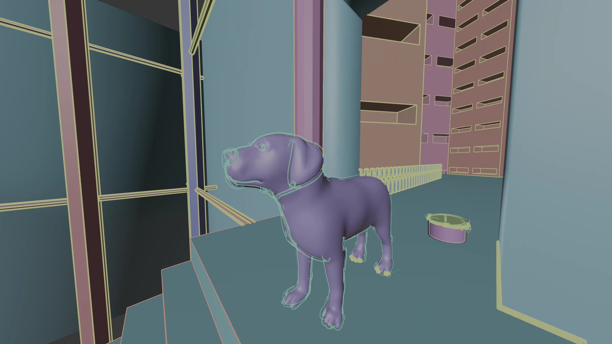

01 / 荷护 · 场景渲染ABOUT / 关于我
01荷护
雨水收集灌溉一体式装置 / 荷叶形态与机械结构的结合。
从模型到渲染
并置观察轮廓、结构、材质与环境光的变化。
02Pocket Park
公共商业空间比赛设计 / 建筑外观、景观与商业界面的组织。
空间与日常
透过植物、灯光与陈设，呈现空间中的层次与氛围。
03DOGGE
三渲二练习 / 以色块、轮廓和明暗分区塑造角色与街巷场景。
模型 → 着色 → 成片
拖动分界线，查看同一场景从模型到渲染的变化。

05日常练习
建筑场景与动态表达 / 持续观察体块、细节和光照。
PRACTICE / 技能方向
从空间构想到
视觉表达。
- 空间与装置设计
- 公共商业空间 · 装置形态 · 场景组织
- 三维建模与渲染
- 模型构建 · 材质表达 · 灯光与氛围
- 风格化视觉
- 三渲二 · 色块与轮廓 · 明暗分区
- 动画与动态表达
- 镜头组织 · 角色表现 · 场景动画